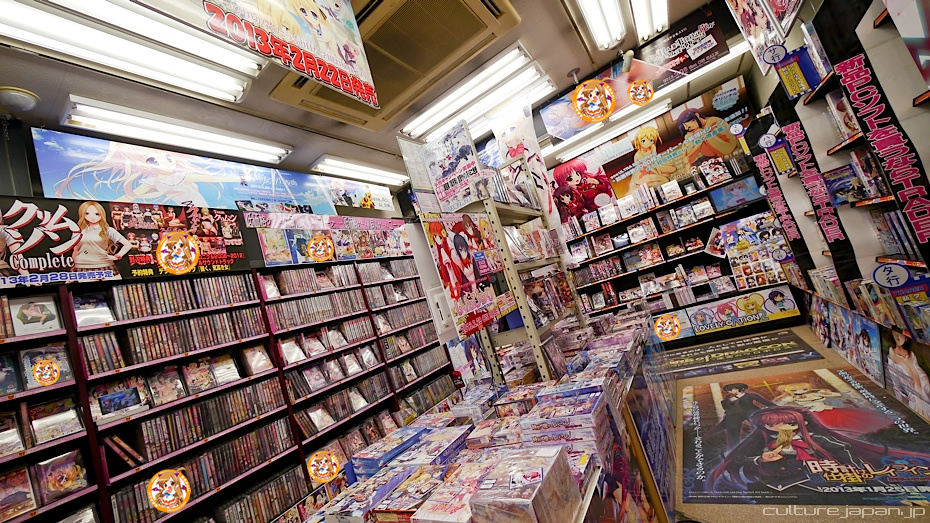

Akihabara
Akihabara é uma das mais famosas cidades de eletrônicos do mundo, com grande desenvolvimento por causa do seu varejo de eletrônicos produzidos em massa.

Além dos eletrônicos, também se destaca como uma cidade de sub-cultura j-pop. As lojas de anime ou jogos estão concentradas, e os produtos para os chamados otakus são substanciais, como software de jogos, anime, DVD, mangá, revista, modelo de plástico, figuras, figurinhas, produtos para cosplay e tendências.

Akihabara também é o centro dos cafés. Existem mais de 20 tipos de cafés com vários gostos. Cada loja tem um ambiente diferente. Leva muita fama pelo seus conhecidos "maid coffee", que são espaços de venda de café onde as atendentes se vestem de formas peculiares, indo de emprega doméstica a gatinho. Há uma variedade de cafés, assim como um pub europeu ou uma escola de fantasias.